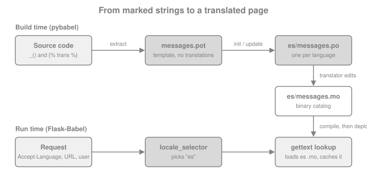

Internationalization with Flask-Babel
|
This content was generated with the assistance of AI and should be verified against the official documentation before being relied on in production. |
This page is written against Flask 3.1.3 (released 2026-02-19), Werkzeug 3.1.9, Flask-Babel 4.0.0 (released
2023-10-02, still the latest release), Babel 2.18.0 and Python 3.13, checked on 2026-10-07; every example was executed
with those versions. Flask 3.2 is not released yet. Flask-Babel keeps its per-request state in flask.g, so the
changes announced for Flask 3.2 (the merge of the request and application contexts) do not touch the code shown here.
A web application that is used in more than one country has two jobs. Internationalization (i18n) prepares the code
so that no user-facing text, date or number is hard-wired to one language. Localization (l10n) supplies the
translations and the regional conventions for each target locale. Flask itself ships nothing for this; the standard
answer is the Flask-Babel extension, a thin layer that connects Flask to Babel (the Python library for the Unicode CLDR
locale data and for gettext catalogs) and to Jinja’s i18n extension. The running example is the Bookshelf
application of the previous pages, now available in English and Spanish.
The Pieces and Who Does What
Internationalization in Python is built from the same few blocks everywhere, and it helps to know which library owns which block, because the error messages and the documentation you will search come from different projects.
| Piece | What it is and who provides it |
|---|---|
|
The classic GNU convention: the code marks a text with |
Message catalog |
A |
Babel ( |
The library and command line that extract messages (Python and Jinja sources), create and update |
Flask-Babel |
The Flask extension: selects the locale and the timezone for every request, loads the right catalog, exposes
|
Jinja |
Provides the |
|
Flask-Babel 4.0 still uses |
The whole workflow, from marking a string to seeing it translated, has a build-time half and a run-time half.

Installing and Configuring Flask-Babel
Install the extension (it pulls in Babel and pytz) and keep the pybabel command in the same environment, because
the extraction step has to import nothing but needs Babel’s command line.
pip install Flask-BabelCreate the Babel object and give it the two selector functions. In an application factory use init_app, exactly as
the page Application Factory & Project Layout
describes for every extension. The constructor and init_app accept the same keyword arguments, so
Babel(app, locale_selector=...) and Babel().init_app(app, locale_selector=...) are equivalent.
The first example is the application that the rest of the page uses. The translations folder and the templates it
refers to are created in the next sections; the code can be read now and run later. It has a locale selector
that prefers the language in the URL, then falls back to the Accept-Language header, and a timezone selector that
reads a cookie. Both are explained in the following sections.
from datetime import date
from decimal import Decimal
from flask import Flask, abort, g, render_template, request, url_for
from flask_babel import Babel, force_locale, get_locale, gettext as _, lazy_gettext as _l, ngettext
from pytz import all_timezones_set
LANGUAGES = ["en", "es"]
BOOKS = [
{"title": "Dune", "added": date(2026, 3, 14), "price": Decimal("12.50")},
{"title": "Solaris", "added": date(2026, 9, 2), "price": Decimal("9.99")},
]
STATUS_LABELS = {"available": _l("Available"), "lent": _l("Lent out")}
def select_locale():
lang_code = g.get("lang_code") # set by the URL preprocessor below
if lang_code in LANGUAGES:
return lang_code
return request.accept_languages.best_match(LANGUAGES)
def select_timezone():
tz = request.cookies.get("tz")
return tz if tz in all_timezones_set else None
def create_app():
app = Flask(__name__)
app.config["BABEL_DEFAULT_LOCALE"] = "en"
Babel(app, locale_selector=select_locale, timezone_selector=select_timezone)
@app.url_value_preprocessor
def pull_lang_code(endpoint, values):
if values and "lang_code" in values:
g.lang_code = values.pop("lang_code")
if g.lang_code not in LANGUAGES:
abort(404)
@app.url_defaults
def add_lang_code(endpoint, values):
if "lang_code" not in values and "lang_code" in g and app.url_map.is_endpoint_expecting(endpoint, "lang_code"):
values["lang_code"] = g.lang_code
@app.context_processor
def inject_locale():
locale = get_locale()
return {"locale": locale, "languages": LANGUAGES}
@app.route("/<lang_code>/books/")
def books():
title = ngettext("%(num)d book on the shelf", "%(num)d books on the shelf", len(BOOKS))
return render_template("books.html", books=BOOKS, heading=title, statuses=STATUS_LABELS)
@app.route("/<lang_code>/books/<int:book_id>/borrow", methods=["POST"])
def borrow(book_id):
return {"message": _("Book %(id)d is now lent out", id=book_id)}
return appSource: Flask-Babel: Configuring and Flask: Application Factories
Babel(...) and init_app(...) take these arguments; each one can also be set through the configuration key in the
right column. A key in app.config wins over the keyword argument, because init_app reads
app.config.get(KEY, argument).
| Argument | Default | Config key | Meaning |
|---|---|---|---|
|
|
|
Locale used when no selector is configured or the selector returns |
|
|
|
Timezone used when no timezone selector is configured or it returns |
|
|
|
Name of the catalog file ( |
|
|
|
Folder or folders (separated by |
|
|
none |
A function with no arguments that returns the locale for the current request |
|
|
none |
A function with no arguments that returns the timezone name or a |
|
built-in mapping |
none |
Overrides of the |
|
|
none |
When |
Source: Flask-Babel documentation
Choosing the Locale and the Timezone for a Request
A locale is a language plus optionally a territory (es, es_ES, en_GB). Which locale a request uses is an
application decision, so Flask-Babel only asks for a function. The function runs at most once per request (the result
is cached on g) and runs lazily, the first time anything asks for the locale: the first gettext call, a formatting
helper or get_locale(). That is why the selector can read g.lang_code set by a URL preprocessor: the preprocessor
has already run when the first translation is requested.
The usual sources, from the most specific to the least, are shown in the diagram. A page that works for anonymous visitors needs at least the last two.
The header is parsed for you: request.accept_languages is a Werkzeug object, and best_match() takes the
supported languages and returns the best one or None. Returning None from the selector makes Flask-Babel use
BABEL_DEFAULT_LOCALE.
app = create_app()
client = app.test_client()
# no prefix in the URL: the helper below is called with the header only
with app.test_request_context("/", headers={"Accept-Language": "fr-CH, fr;q=0.9, es;q=0.8"}):
assert str(get_locale()) == "es" # French is not supported, Spanish is the best match
with app.test_request_context("/", headers={"Accept-Language": "de"}):
assert str(get_locale()) == "en" # nothing matches: BABEL_DEFAULT_LOCALE
with app.test_request_context("/", headers={"Accept-Language": "es"}):
assert get_locale().language == "es"Source: Flask-Babel: API and Werkzeug: LanguageAccept
The selector’s return value is parsed with babel.Locale.parse. Pitfalls follow from that.
-
Use underscores:
es_ESparses,es-ESraisesValueError. The browser sends hyphens, so convert, or compare against your own list as above and return only your own identifiers. -
An unknown identifier (
xx) raisesUnknownLocaleErrorand the request fails with a 500. Never return the rawAccept-Languagevalue, a query parameter or a cookie without checking it against the languages you support. -
The selector runs inside a request, because it normally reads
request. Code that has only an application context (a CLI command, a Celery task) must not rely on a selector that touchesrequest; useforce_localefor that (see Emails, CLI Commands and Background Jobs). -
Flask-Babel 3.0 removed the
@babel.localeselectorand@babel.timezoneselectordecorators that the second edition of the Flask Framework Cookbook still uses. Pass the functions to the constructor or toinit_app, as above. The third edition of the book already does this.
The timezone works in the same way. timezone_selector returns a timezone name such as Europe/Madrid, which
Flask-Babel converts with pytz.timezone, or a pytz tzinfo object. The selector above accepts only names that
pytz knows; an unknown name would otherwise raise UnknownTimeZoneError. A common design stores the preferred
language and timezone in the user’s profile (see
Authentication & Flask-Login for how to reach the current
user) and falls back to the cookie and the header for anonymous visitors. Never trust a client-supplied value more
than for display: a locale and a timezone are presentation settings, not authorization data.
from flask_babel import get_timezone
with app.test_request_context("/", headers={"Cookie": "tz=Europe/Madrid"}):
assert str(get_timezone()) == "Europe/Madrid"
with app.test_request_context("/", headers={"Cookie": "tz=Not/AZone"}):
assert str(get_timezone()) == "UTC" # rejected by select_timezone, default usedSource: Flask-Babel: API
The selected values are computed once and cached. When something in the middle of a request changes the language (the
user submits a profile form), call refresh() so that the cached locale, timezone and translations are dropped and
the next call selects again. Without it, a flash() message issued right after the change would still be in the old
language while the redirect target is already in the new one.
from flask_babel import refresh
with app.test_request_context("/", headers={"Accept-Language": "en"}):
assert str(get_locale()) == "en"
g.lang_code = "es" # imagine the profile form just saved this
assert str(get_locale()) == "en" # still cached
refresh()
assert str(get_locale()) == "es"Source: Flask-Babel: refresh()
Babel.list_translations() (on the instance created at start-up, reachable as
app.extensions["babel"].instance) returns the Locale objects for which compiled catalogs exist, plus the default
locale. It is the right source for a language switcher and for the list of hreflang links, because it can never
list a language you forgot to compile.
Marking Strings in Python Code
Flask-Babel exports the gettext family as functions bound to the current request: they look up the catalog of the
selected locale at the moment they are called. The conventional alias is _.
| Function | Use |
|---|---|
|
Translate a string. The |
|
Choose the singular or plural form for |
|
Translate a string whose meaning depends on a context, e.g. the verb and the adjective "Open" |
|
Plural form with a context |
|
Same signatures, but return a |
with app.test_request_context("/", headers={"Accept-Language": "es"}):
assert _("Bookshelf") == "Estantería"
assert _("Book %(id)d is now lent out", id=7) == "El libro 7 está ahora prestado"
assert ngettext("%(num)d book on the shelf", "%(num)d books on the shelf", 1) == "1 libro en la estantería"
assert ngettext("%(num)d book on the shelf", "%(num)d books on the shelf", 5) == "5 libros en la estantería"
with app.test_request_context("/", headers={"Accept-Language": "en"}):
assert _("Bookshelf") == "Bookshelf"
assert _("Bookshelf") == "Bookshelf" # no Flask context at all: the text is returned unchangedSource: Flask-Babel: API
The same object works outside a request: with no request context there is nothing to select a locale for, and
gettext returns the original string unchanged (outside every Flask context, _("Bookshelf") is simply
"Bookshelf"). Flask-Babel never raises for a missing translation either; a text that
is absent from the catalog is returned as written, which is why an untranslated page degrades to English instead of
failing.
Rules that keep the Strings Extractable and Translatable
The extractor reads source code and does not run it, so what you pass to gettext has to be a string literal.
-
Do not use f-strings, concatenation or
str.formatinside the call._(f"Hello {name}")extracts nothing useful and the translation can never match. Use named placeholders and pass the values:_("Hello %(name)s", name=name). -
Do not split a sentence into pieces that are translated separately. Word order and grammar differ between languages; give the translator the whole sentence with placeholders.
-
Do not translate a variable (
_(message)): the extractor sees the name, not the text. Use the lazy variants to create the literal where it is defined, and translate it where it is shown. -
Use
ngettextfor every count, even when you think "1 item" cannot happen. Some languages have more than two plural forms (Polish, Arabic, Russian). ThePlural-Formsheader of the.pofile defines how many, and the translator provides one translation per form. English-styleif n == 1logic is wrong for them. -
Use
pgettextwhen the same English word needs different translations ("Open" a book, an "Open" status). -
Add a comment for translators in the line before the call, starting with a tag you pass to the extractor (
# NOTE: shown on the lending button, extracted with-c NOTE).
Lazy Strings
A module-level constant is evaluated when the module is imported, long before any request exists, so
STATUS_LABELS = {"lent": _("Lent out")} would freeze the text in the default language (or in no language at all).
lazy_gettext returns a proxy object instead; the lookup happens each time the proxy is converted to str, which in
Jinja happens when the template is rendered. It is the right tool for form labels, validation messages, choices lists,
model column labels and flash message constants. The alias _l is the usual spelling, and the extractor must be told
to look for it (see the next sections).
import json
lent = STATUS_LABELS["lent"]
with app.test_request_context("/", headers={"Accept-Language": "es"}):
assert str(lent) == "Prestado"
with app.test_request_context("/", headers={"Accept-Language": "en"}):
assert str(lent) == "Lent out"
assert lent == "Lent out" # compares like a string
assert "Lent" in lent and len(lent) == 8
try:
json.dumps({"status": lent}) # the json module does not know the proxy
except TypeError:
pass
else:
raise AssertionError("expected TypeError")
assert json.dumps({"status": str(lent)}) == '{"status": "Lent out"}'Source: Flask-Babel: Using Translations
Two caveats apply. A lazy string is not a str: isinstance(lent, str) is false, json.dumps and most
serializers fail on it, and a string method such as .upper() evaluates it at that moment. Call str() when you hand
the value to a library. And a lazy string used outside a request evaluates in the default locale (no catalog is
loaded), so never cache its text (in a module constant, a cache entry or a database row) when the cache is shared
between languages.
Marking Strings in Jinja Templates
Flask-Babel installs jinja2.ext.i18n with the new-style gettext functions, so a template can use _() as a function,
and the {% trans %} block for longer text. New style means that placeholders use the %(name)s syntax, the result
is autoescaped, and % characters in the text need no special treatment. In templates the translation function is
available as _, gettext, ngettext, pgettext and npgettext without importing anything.
<!doctype html>
<html lang="{{ locale }}" dir="{{ locale.text_direction }}">
<head><title>{{ _("Bookshelf") }}</title></head>
<body>
<h1>{{ _("Bookshelf") }}</h1>
<p>{{ heading }}</p>
{% trans user="Ada" %}Welcome back, {{ user }}!{% endtrans %}
<ul>
{% for book in books %}
<li>{{ book.title }}
<time datetime="{{ book.added.isoformat() }}">{{ book.added|dateformat("long") }}</time>
{{ book.price|currencyformat("EUR") }}</li>
{% endfor %}
</ul>
<p>{% trans count=books|length %}{{ count }} book added this year.{% pluralize %}{{ count }} books added this year.{% endtrans %}</p>
<p>{{ statuses.available }}</p>
{% for code in languages %}<a href="{{ url_for('books', lang_code=code) }}" hreflang="{{ code }}">{{ code }}</a> {% endfor %}
</body>
</html>Source: Jinja: i18n extension
The template above shows the pieces.
-
{{ _("Bookshelf") }}is a plain call. Variables go in as keyword arguments:{{ _("Hello %(name)s", name=user.name) }}. -
{% trans %}...{% endtrans %}takes variables in its header (user="Ada") and refers to them with{{ user }}inside. Only simple variable names are allowed inside the block; compute filters and attribute lookups in the header. -
{% pluralize %}splits the singular and the plural text. The variable that drives the choice iscounthere; without a name Jinja uses the first variable. -
localeis passed by the context processor in the application above.get_locale()is a Python function and is not added to the template context by Flask-Babel, so expose it yourself.locale.text_directionreturnsltrorrtl, and thelanganddirattributes on<html>are what browsers, screen readers and search engines use. -
Fixed text in a template belongs in the
transblock or_(); text produced by{{ }}from the database is not translated, because it is data, not a message.
Because the extension marks the output as already escaped text, never add |safe to a translated string just to keep
markup in it. If the translated text must contain a link or emphasis, put the HTML in the trans block (the template
author controls it) and pass the dynamic parts as variables, which are escaped:
{% trans link=url_for("books") %}See the <a href="{{ link }}">books</a>.{% endtrans %}. A translator must then
keep the tags intact, so keep markup inside messages to a minimum.
Extracting, Translating and Compiling Catalogs with pybabel
The command line is pybabel. Four sub-commands cover the life of a catalog. They are run from the project root,
next to app.py.
First tell Babel what to scan. The mapping file babel.cfg lists glob patterns and the extractor to use for each:
[python: **.py]
[jinja2: templates/**.html]Then run the cycle.
# 1. extract every marked string into a template (.pot); -k also looks for lazy_gettext and the alias _l
pybabel extract -F babel.cfg -k lazy_gettext -k _l -o messages.pot .
# 2. create the catalog of a new language (writes translations/es/LC_MESSAGES/messages.po)
pybabel init -i messages.pot -d translations -l es
# 3. after the code changed: re-extract and merge new strings into the existing catalogs
pybabel extract -F babel.cfg -k lazy_gettext -k _l -o messages.pot .
pybabel update -i messages.pot -d translations
# 4. compile the .po files into the binary .mo files that Flask-Babel loads
pybabel compile -d translations --statisticsThe options that matter in practice:
| Option | Effect |
|---|---|
|
The mapping file. Without it only Python files are scanned and the templates are silently ignored |
|
An additional function name to extract. Add |
|
Also extract the comment that starts with |
|
The template file to write. Commit it, or regenerate it in CI; it is not a build artifact for production |
|
Do not write |
|
Line width of the generated files ( |
|
Creates the catalog and fills the |
|
Delete entries that no longer occur in the code instead of keeping them as commented obsolete entries |
|
Do not let |
|
Print how many messages are translated per catalog. A good last line in CI logs |
|
Also compile entries marked |
Source: Babel: Command-Line Interface
init produces a .po file with the header and one entry per message. A translator fills each msgstr; the
entry of a plural has one msgstr[n] per plural form of the language (two for Spanish, as the Plural-Forms header
states).
"Language: es\n"
"Plural-Forms: nplurals=2; plural=(n != 1);\n"
#: app.py:52
#, python-format
msgid "%(num)d book on the shelf"
msgid_plural "%(num)d books on the shelf"
msgstr[0] "%(num)d libro en la estantería"
msgstr[1] "%(num)d libros en la estantería"
#: templates/books.html:3 templates/books.html:5
msgid "Bookshelf"
msgstr "Estantería"Translators must keep the placeholders (%(num)d, %(user)s) exactly as they are; #, python-format makes tools
such as Poedit warn when they do not. After step 4 the compiled catalog sits next to the .po file:
bookshelf-i18n/
├── app.py
├── babel.cfg
├── messages.pot
├── templates/
│ └── books.html
└── translations/
└── es/
└── LC_MESSAGES/
├── messages.mo
└── messages.poOperational points that bite teams the first time:
-
Only
.mofiles are loaded. Forgettingpybabel compileis the most common reason for "my translation does not appear". The cure is to compile in the build, not by hand: aDockerfilestage or a CI step that runspybabel compile -d translations, and.mofiles in.gitignore. The page Docker covers multi-stage builds. -
The catalogs are read lazily on the first translation of each locale per process and kept in memory. Changing a
.mofile requires restarting the workers. -
Do not run
pybabel initfor a language that exists: it overwrites the translated file. Useupdate. -
Run
pybabel extractfrom the project directory, not from a parent that contains a virtual environment, or the pattern**.pyalso scans the installed packages. Keep the virtual environment outside the tree or narrow the mapping ([python: bookshelf/**.py]). -
Source strings are English by convention, so the
enlocale needs no catalog. Provide anencatalog only when you want to change the wording per region (en_GB).
Putting the Language in the URL
Search engines and users sharing links prefer one URL per language (/es/books/), because it makes the language
explicit and cacheable. The mechanism is not part of Flask-Babel; it is Flask’s URL processors, described in
URL Processors and Language Prefixes
of the routing page. The application at the top of this page already contains the three parts:
-
@app.url_value_preprocessorremoveslang_codefrom the view arguments after routing and stores it ing(and answers 404 for an unsupported language, so/fr/books/is not a page). -
@app.url_defaultsaddslang_codeto everyurl_for()call, so views and templates callurl_for("books")and still get/es/books/when the current language is Spanish. The test withis_endpoint_expectingkeeps thestaticendpoint (which has nolang_coderule variable) working. -
select_localereadsg.lang_codefirst. Because Flask-Babel calls the selector lazily,g.lang_codeexists when the first translation is asked for.
The Flask Framework Cookbook obtains the same effect with a before_request function that parses request.path; the
two hooks above also work when URLs are built outside a request handler context and need no path parsing.
client = app.test_client()
spanish = client.get("/es/books/")
english = client.get("/en/books/")
assert spanish.status_code == 200 and english.status_code == 200
assert "<h1>Estantería</h1>" in spanish.text
assert "<h1>Bookshelf</h1>" in english.text
assert "2 libros en la estantería" in spanish.text
assert '<html lang="es" dir="ltr">' in spanish.text
assert 'href="/en/books/" hreflang="en"' in spanish.text # language switcher keeps the same page
assert client.get("/fr/books/").status_code == 404
# the Accept-Language header does not override an explicit prefix
assert "<h1>Estantería</h1>" in client.get("/es/books/", headers={"Accept-Language": "en"}).text
assert client.post("/es/books/1/borrow").json == {"message": "El libro 1 está ahora prestado"}Source: Flask: URL Processors
Design notes for a language-prefixed site:
-
Redirect the bare
/to the best language (redirect(url_for("books", lang_code=best))) with a 302, and put a<link rel="alternate" hreflang="es" href="...">for each language in<head>; the switcher in the template does that withlanguagesandurl_for. -
A language switcher that stores the choice in a cookie needs an endpoint that sets the cookie and redirects back. Validate the redirect target (only your own relative paths), otherwise the endpoint is an open redirect.
-
Responses that differ by language must say so to caches: send
Vary: Accept-Languagewhen the language depends on the header, and make cache keys include the locale. The caching page of this section builds on that. -
Prefixes work with a blueprint too: register it with
url_prefix="/<lang_code>"and attach the processors to the blueprint (@bp.url_value_preprocessor,@bp.url_defaults), which keeps the language handling in one place.
Dates, Numbers and Currencies
Translating text is half of localization. The other half is that 3/4/2026 means March 4 in the United States and 3
April in Spain, that 1,234.5 is 1.234,5 in Spanish, and that currencies place their symbol differently. Babel’s
formatting functions use CLDR data, and Flask-Babel wraps each of them so it uses the request’s locale and timezone.
Every function is also a Jinja filter.
| Function | Jinja filter | Notes |
|---|---|---|
|
|
|
|
|
A |
|
|
A |
|
|
"3 days", "2 hours"; pass |
|
|
Grouping according to the locale |
|
|
|
|
|
|
|
|
|
|
|
|
from datetime import date, datetime, time, timedelta
from decimal import Decimal
from flask_babel import (format_currency, format_date, format_datetime, format_decimal, format_percent,
format_time, format_timedelta, to_user_timezone, to_utc)
moment = datetime(2026, 10, 7, 12, 0) # naive datetimes are interpreted as UTC
with app.test_request_context("/", headers={"Accept-Language": "es"}):
assert format_date(date(2026, 3, 14), "long") == "14 de marzo de 2026"
assert format_currency(Decimal("1234.50"), "EUR") == "1.234,50\xa0€"
assert format_decimal(1234567.891) == "1.234.567,891"
assert format_percent(0.256) == "26\xa0%"
assert format_timedelta(timedelta(days=3)) == "3 días"
with app.test_request_context("/", headers={"Accept-Language": "en"}):
assert format_date(date(2026, 3, 14), "long") == "March 14, 2026"
assert format_currency(Decimal("1234.50"), "EUR") == "€1,234.50"
assert format_decimal(1234567.891) == "1,234,567.891"
assert format_time(time(14, 30), "short") == "2:30\u202fPM"
assert format_timedelta(timedelta(days=3), add_direction=True) == "in 3 days"Timezones are where the surprises live. Flask-Babel follows the rule "store UTC, show local". A naive datetime
(without tzinfo) is assumed to be UTC. By default the date functions rebase the value to the timezone returned by
the selector before formatting; pass rebase=False to format the value as it is. to_user_timezone(dt) converts
explicitly, and to_utc(dt) does the opposite for a naive datetime that the user typed in their own timezone (for
instance from a form), which is then safe to store.
with app.test_request_context("/", headers={"Accept-Language": "en", "Cookie": "tz=Europe/Madrid"}):
assert format_datetime(moment, "short") == "10/7/26, 2:00\u202fPM" # 12:00 UTC is 14:00 in Madrid in October
assert format_datetime(moment, "short", rebase=False) == "10/7/26, 12:00\u202fPM"
assert format_datetime(moment, "yyyy-MM-dd HH:mm zzz") == "2026-10-07 14:00 +0200"
assert to_user_timezone(datetime(2026, 7, 1, 12)).hour == 14
assert to_utc(datetime(2026, 7, 1, 14)) == datetime(2026, 7, 1, 12) # the user typed 14:00 local timeSource: Flask-Babel: Formatting Dates
Things to watch:
-
format_currencyformats; it does not convert. The amount and the currency code come from your data. Store money asDecimal(or integer minor units) with the currency, never as a float. -
Many locales separate the number from the symbol with a no-break space (
U+00A0): the Spanish1.234,50 €contains one, and recent CLDR data puts a narrow no-break space (U+202F) before AM and PM in English times. Compare with"\xa0"and"\u202f"in tests, and never replace them with normal spaces in templates. -
Datetimes come out of some databases without
tzinfoeven when stored as UTC. Flask-Babel’s "naive means UTC" rule is only right when you stored UTC; combine it withdatetime.now(timezone.utc)in the code that writes values (see Flask-SQLAlchemy). -
The default
mediumpattern differs per language. To override a pattern for all locales, passdate_formats={"datetime.medium": "yyyy-MM-dd HH:mm"}(keys are the ones listed inBabel.default_date_formats). -
The Cookbooks (both editions) build a date helper that returns HTML containing
<script>document.write(...)</script>and formats the string with%insideMarkup. That pattern is an XSS risk and is not needed: render the value on the server withdateformat, and emit a machine-readable attribute for scripts, as the template above does with<time datetime="{{ book.added.isoformat() }}">...</time>. If a browser-side "5 minutes ago" is wanted, the JavaScript reads that attribute and usesIntl.RelativeTimeFormat, so no server-built script is involved.
Several Catalogs, Extensions and Blueprints
By default every translation comes from one catalog, translations/<locale>/LC_MESSAGES/messages.mo. You can change
this in two ways.
-
BABEL_TRANSLATION_DIRECTORIESaccepts several folders separated by;, andBABEL_DOMAINseveral domain names, also separated by;. The catalogs are merged into one, and when the same message exists in several of them the later directory overrides the earlier one. Use it when a reusable blueprint or a company library ships its own translations. -
A
flask_babel.Domainobject is an additional, independent catalog. Create it with its own directory and domain name, call itsgettext,ngettext,lazy_gettextand companions, or make it the default for the current request withdomain.as_default().
import os
from flask_babel import Domain
admin_domain = Domain(translation_directories=[os.path.join(app.root_path, "translations")], domain="messages")
with app.test_request_context("/", headers={"Accept-Language": "es"}):
assert admin_domain.gettext("Bookshelf") == "Estantería"
assert repr(admin_domain).startswith("<Domain(")Source: Flask-Babel: Domain
Libraries interact with the selected locale in different ways. WTForms ships its own wtforms domain with the texts of
its built-in validators ("This field is required"). Flask-WTF connects it to Flask-Babel: when the babel extension is
registered, the form’s error messages follow get_locale() with no extra code. Your own labels and validators must be
marked yourself, with lazy_gettext because a form class is defined at import time.
import secrets
from flask_wtf import FlaskForm
from wtforms import StringField
from wtforms.validators import DataRequired
app.config["SECRET_KEY"] = secrets.token_hex() # generated for this demo, never written in the source
app.config["WTF_CSRF_ENABLED"] = False # only to keep this demo short
class BookForm(FlaskForm):
title = StringField(_l("Title"), validators=[DataRequired()])
with app.test_request_context("/", method="POST", headers={"Accept-Language": "es"}):
form = BookForm()
assert not form.validate()
assert form.title.errors == ["Este campo es obligatorio."]
assert str(form.title.label.text) == "Title" # no catalog entry in the demo, so the original text is returnedFlask-WTF’s own documentation root still redirects to the 1.2.x tree, as the version baseline of this section notes.
The page Forms with Flask-WTF covers the form itself.
Emails, CLI Commands and Background Jobs
A selector that reads request cannot run when there is no request. Three situations need the locale to be
chosen on purpose: an email sent in the recipient’s language rather than in the language of whoever triggered it, a
flask CLI command that prints messages, and a worker process (for instance a Celery task) that renders a template.
force_locale is a context manager that overrides the locale for its block and restores the previous state
afterwards. Inside a request it works as in the first example below. It also works with only an application context,
which is what a CLI command or a worker has: inside the block the selector is never called, so it may safely read
request. Outside the block the selector would run again and fail without a request, so keep every translation of such
code inside force_locale.
from flask_babel import force_locale
def render_receipt(user_locale: str, book_id: int) -> str:
with force_locale(user_locale):
return _("Book %(id)d is now lent out", id=book_id)
with app.test_request_context("/", headers={"Accept-Language": "en"}):
assert _("Bookshelf") == "Bookshelf"
assert render_receipt("es", 3) == "El libro 3 está ahora prestado" # the recipient's language
assert _("Bookshelf") == "Bookshelf" # the request's own language is restored
# a worker or a CLI command has an application context only
with app.app_context():
assert render_receipt("es", 4) == "El libro 4 está ahora prestado"
assert render_receipt("en", 4) == "Book 4 is now lent out"Source: Flask-Babel: force_locale()
Store the user’s locale with the user (or with the job’s arguments), not the translated text. The worker then renders the
message in the right language when it runs. The surrounding pages explain the transport:
Messaging and Scheduling describe queues and
jobs; the Background Jobs, Celery & Email page of this section covers Celery and email with Flask. A subtle detail is that the locale is cached on
g, and g belongs to the application context; a long-lived context that survives several operations keeps the first
locale it computed, so open a fresh context per job or call refresh().
Testing Translations
Tests can send the header or the URL prefix through app.test_client(), as the examples above do. Two further checks
make internationalization hard to break:
-
Run
pybabel compile --statisticsin CI and fail the build on untranslated or fuzzy entries when your policy demands complete catalogs. The command printsN of M messages (X%) translated. -
Check that the
.potis current: extract to a temporary file in CI and compare it to the committed template.
import subprocess
import sys
import tempfile
from pathlib import Path
with tempfile.TemporaryDirectory() as tmp:
pot = Path(tmp) / "messages.pot"
result = subprocess.run(
[sys.executable, "-m", "babel.messages.frontend", "extract", "-F", "babel.cfg", "-k", "lazy_gettext", "-k", "_l",
"--no-location", "-o", str(pot), "."],
capture_output=True, text=True, check=True)
text = pot.read_text(encoding="utf-8")
assert 'msgid "Bookshelf"' in text and 'msgid "Lent out"' in text
stats = subprocess.run(
[sys.executable, "-m", "babel.messages.frontend", "compile", "-d", "translations", "--statistics"],
capture_output=True, text=True)
assert "7 of 7 messages (100%) translated" in (stats.stdout + stats.stderr)Source: Babel: Command-Line Interface
Maintenance Status and Version Notes
-
Flask-Babel 4.0.0 (2023-10-02) is the latest release and requires Python 3.8 or newer but below 4.0. It works with Flask 3.1; this page’s examples ran on it. It does not use
zoneinfo:get_timezone()returns apytzobject and its docs mentionpytz. If the extension seems quiet, that is the reason; a stable API with few commits is not a defect, but check the project’s issue tracker before building a dependency on a new feature. -
Flask-Babel 3.0 replaced the
@babel.localeselectorand@babel.timezoneselectordecorators with thelocale_selector=andtimezone_selector=arguments. Both are absent in 4.0.0. -
flask.ext.babelandfrom flask.ext import babel(the pre-extension-namespace import of old tutorials) no longer exist; importflask_babel. -
Babel 2.18 is the library underneath. Its CLDR data is updated regularly, so month names, currency symbols and number formats can change slightly between Babel releases; do not assert on exact formatting in tests that must survive upgrades unless you pin Babel.
-
Flask 3.2 (not released): contexts are merged and the request context becomes an alias of the application context. Flask-Babel stores its state in
gand usescurrent_app, both defined by the application context, so the usage on this page does not change.
Source: Flask-Babel on PyPI and Flask: Changes
Where the Books Are Outdated
-
The second edition of the Flask Framework Cookbook (2019, Flask 1.0) registers the locale with
@babel.localeselector, which Flask-Babel removed in version 3.0. The third edition (2023) passeslocale_selector=and is correct. -
The cookbooks' date helper with
document.writeinsideMarkupis an XSS-prone pattern; see Dates, Numbers and Currencies for the safe replacement. -
Old extension code and tutorials reach into
_request_ctx_stackfor the per-request state. Those stacks were removed in Flask 3.0, and the current extension keeps its state ong; do not read it directly, useget_locale()andget_timezone(). -
Much older tutorials import
Markupandescapefromflaskandjinja2; both were removed (Flask 3.0 and Jinja 3.1). Import them frommarkupsafe. -
The cookbooks' language-in-the-URL recipe parses the path in
before_request. Theurl_value_preprocessorandurl_defaultspair used on this page is the supported way and also rewritesurl_for()output.
Security Checklist
-
Validate every locale, language code and timezone that comes from the URL, a cookie, a header or a form against an allow list; an unknown value must never reach
Locale.parseorpytz.timezone. -
Do not put user input into the message id:
_(user_text)never matches a catalog and can never be extracted. -
Use named placeholders and pass variables; never build the message with
%or an f-string before callinggettext, because a translator-supplied catalog entry containing%(x)swould then be formatted against user text. -
Escape output: Jinja autoescape applies to translated text. Do not use
|safeon translated text, and do not callMarkup(_(...))on text that contains user input. -
A
.pofile is code in the sense that its texts are rendered into pages. Review contributions from external translators as you review code, and compile from reviewed.pofiles only. -
Redirects of a language-switch endpoint must stay on your own site.
-
Locale and timezone cookies are not secrets, but set
SameSiteandSecurelike any other cookie; see Sessions, Cookies & Flashing.
Where to Go Next
The page Jinja Templates covers escaping and filters in depth. For the Python language side of strings and the standard library, see Python. Other frameworks on this site solve the same problem: FastAPI and Django (which ships its own i18n framework), as do the Tornado and Pyramid sections. Text produced by language models also needs translation decisions; see AI.